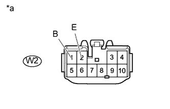

СИСТЕМА ЛЮКА > Цепь питания ЭБУ люка |
| 1.ПРОВЕРЬТЕ ЖГУТ ПРОВОДОВ И РАЗЪЕМ (ЭБУ ЛЮКА – АККУМУЛЯТОРНАЯ БАТАРЕЯ И МАССА) |
|  |
Отсоедините разъем W2 ЭБУ.
Измерьте сопротивление и напряжение в соответствии со значениями, приведенными в таблице.
| Контакты для подключения диагностического прибора | Условие | Заданные условия |
| W2-2 (E) - масса | Всегда | Менее 1 Ом |
| Контакты для подключения диагностического прибора | Условие | Заданные условия |
| W2-1 (B) - масса | Всегда | 11–14 В |
| *a | Вид спереди разъема со стороны жгута проводов: (к приводному механизму люка в сборе) |
|
| ||||
| OK | ||
| ||